Три раздела группы Оплата показывают движение денег и почти ничего не позволяют менять: Платежи — журнал поступлений и возвратов, Заказы — намерения купить Pro с суммой и сроком, Транзакции провайдеров — состояние оплат Payme и Click. Единственное действие — возврат денег. Всё — только для администратора.
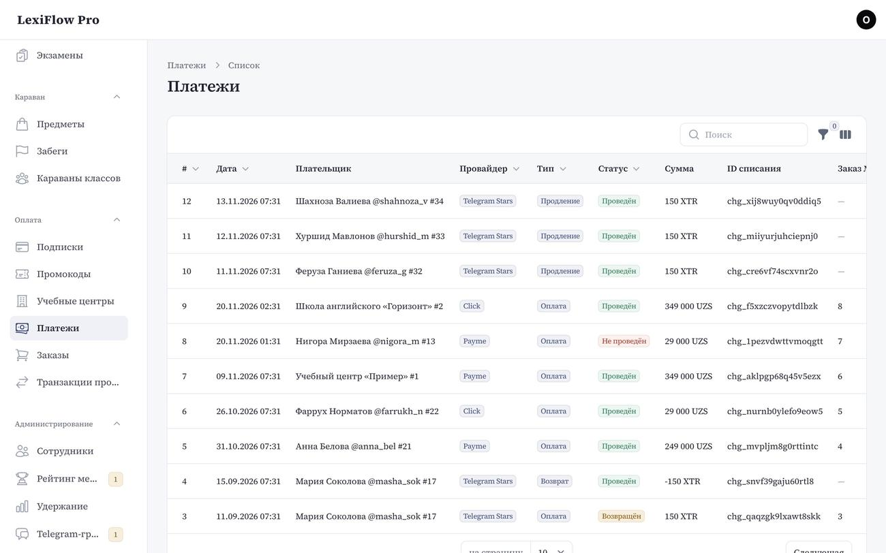
| Тип / статус | Что значит |
|---|---|
| Оплата | первая оплата заказа |
| Продление | автопродление подписки Telegram Stars |
| Возврат | зеркальная запись возврата (сумма с минусом) |
| Проведён | деньги получены и зачислены |
| Возвращён | по этой оплате оформлен возврат |
| Не проведён | деньги пришли, но зачислить их не удалось — ученик Pro не получил, разберитесь |
Суммы показываются в целых сумах (UZS) или Stars (XTR). Поиск — по ID списания и ID события у провайдера (их ученик может прислать из чека). Фильтры: статус, тип, провайдер, валюта, тип плательщика.
Просмотр открывает платёж: сумма, плательщик, «Плательщик (снимок)» — имя, username и Telegram ID на момент оплаты, ссылки на заказ, транзакцию и подписку, оплаченный период, а ниже «Данные от провайдера (секреты скрыты)».
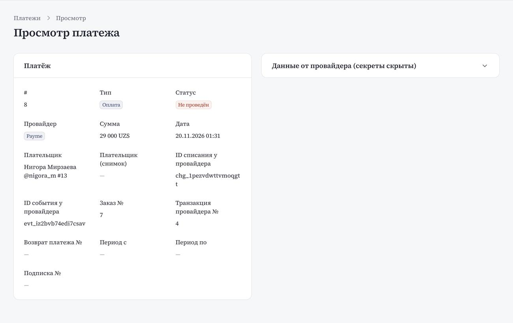
Ключи, подписи, токены и платёжные ссылки на экране всегда скрыты («[redacted]», токен заказа сокращён). Если нужно полное значение — смотрите кабинет провайдера.
Кнопка Вернуть деньги — в строке проведённой оплаты или продления и на странице платежа. Нужна Причина, она записывается в журнал аудита. Возврат оформляется один раз: после него кнопка исчезает.
| Провайдер | Как вернуть |
|---|---|
| Telegram Stars | панель возвращает Stars сама через Telegram. Укажите причину и подтвердите |
| Payme | сначала верните деньги в кабинете Payme — обычно возврат потом приходит в платформу сам. Только если не пришёл: Вернуть деньги, включите «Деньги уже возвращены вручную в кабинете провайдера», причина |
| Click | Click не сообщает о возвратах. Верните деньги в кабинете Click (по ID списания), затем Вернуть деньги с включённым «Деньги уже возвращены вручную…» |
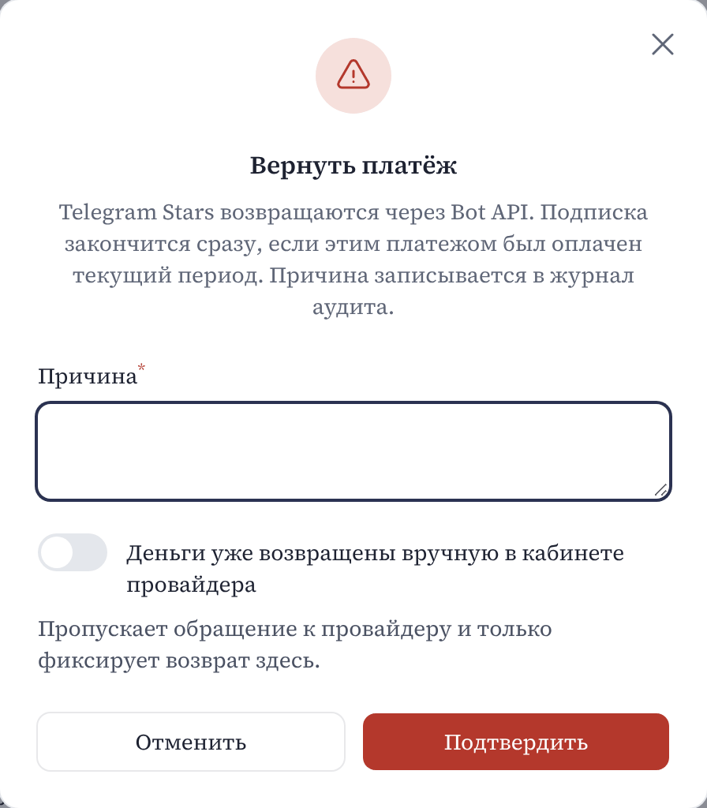
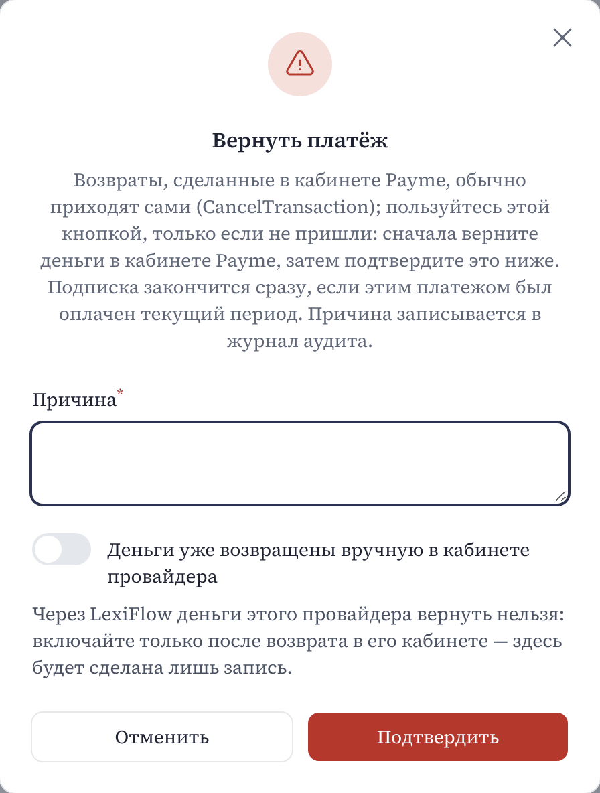
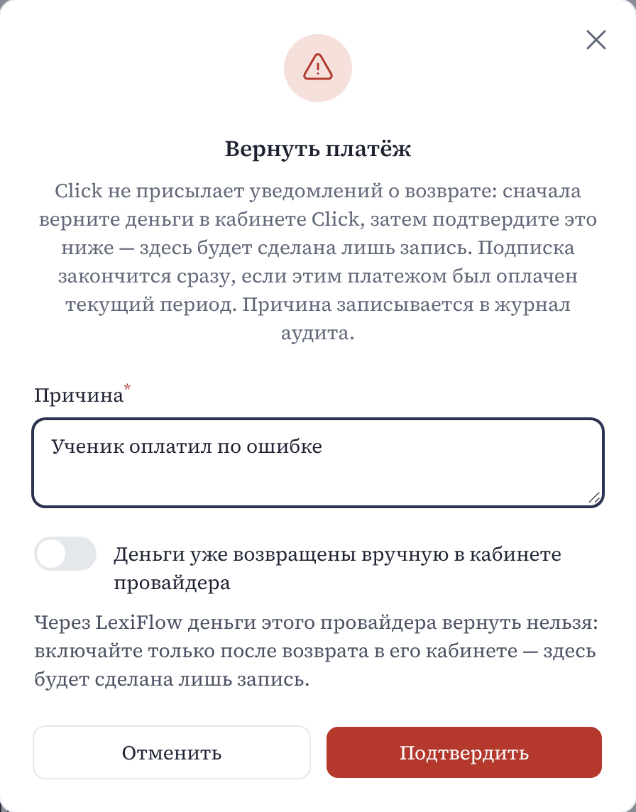
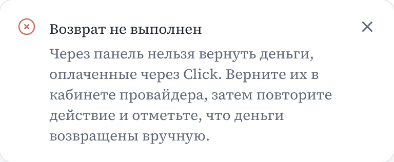
Что происходит при возврате: оплата получает статус «Возвращён», появляется строка «Возврат», и если этой оплатой оплачен текущий период — подписка заканчивается сразу, ученик переходит на Free. Возврат за давно прошедший период только отмечается в журнале.
Включайте «Деньги уже возвращены вручную» только после настоящего возврата в кабинете провайдера: панель поверит вам на слово. Если провайдер вернул деньги, а панель показала ошибку, не повторяйте возврат вслепую: проверьте статус платежа; если он всё ещё «Проведён» — оформите возврат с включённым переключателем и сообщите техническому администратору.
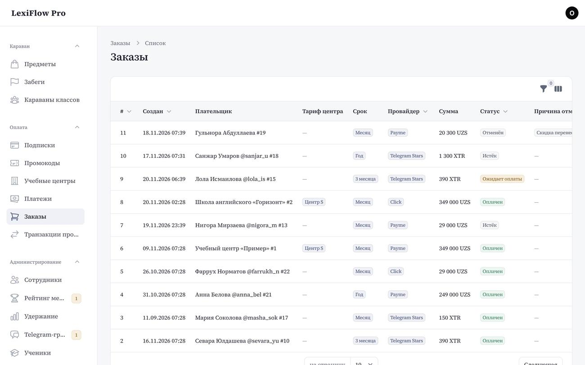
| Статус заказа | Что значит |
|---|---|
| Ожидает оплаты | покупатель ещё не заплатил; заказ живёт ограниченное время |
| Оплачен | оплата зачислена |
| Истёк | срок заказа прошёл без оплаты |
| Отменён | заказ закрыт платформой; причина — в колонке «Причина отмены» |
| Ошибка | провайдер не выдал ссылку на оплату |
Фильтры: статус, провайдер, валюта, тип плательщика, тариф центра и три фильтра отметок. На странице заказа — сумма и «Цена по прайсу» (разница — скидка), номер скидки, срок, кем создан («Mini App», «Бот», «Кабинет центра», «Админ-панель»), даты и служебные данные.
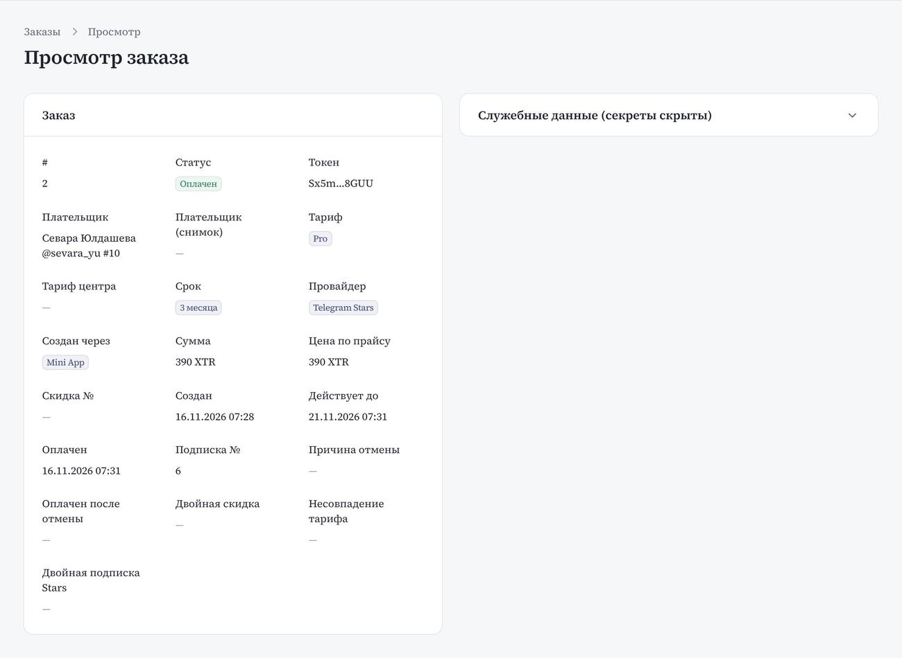
| Причина | Что произошло |
|---|---|
| Скидка перенесена на другой заказ | ученик начал новый заказ, скидка ушла туда |
| Скидка использована другим заказом | скидку потратила другая оплата |
| Сменился тариф центра | оплата другого заказа поменяла тариф центра; заказ на прежний тариф закрыт |
| Уже есть подписка Stars | подписка Stars ученика началась, лишний ожидающий заказ закрыт |
| Отметка (и фильтр) | Что случилось | Что делать |
|---|---|---|
| оплачен после отмены | оплата, уже шедшая у провайдера, пришла в отменённый заказ и зачислена полностью | ничего: деньги не потеряны |
| Двойная скидка | поздняя оплата пришла, когда скидка уже была использована другим заказом: ученик получил скидку дважды | подписка уже действует; если вторая скидка недопустима — договоритесь о доплате с учеником. Случай редкий |
| Несовпадение тарифа («тариф не совпал (действует: …)») | центр оплатил заказ на один тариф, а действующий тариф к этому моменту был другим. Деньги зачислены, срок продлён, но тариф и места оставлены прежними | решите с владельцем центра: оплаченный месяц за действующий тариф (ничего не делать) или за заказанный (Выдать Pro с нужным тарифом) либо возврат |
| Двойная подписка Stars | ученик оплатил вторую подписку Stars, когда первая уже шла. Pro продлён, обе подписки Telegram продолжают списания | спросите ученика, вернуть ли вторую оплату (Вернуть деньги на этом платеже). Отмена автопродления в /pro останавливает обе подписки |
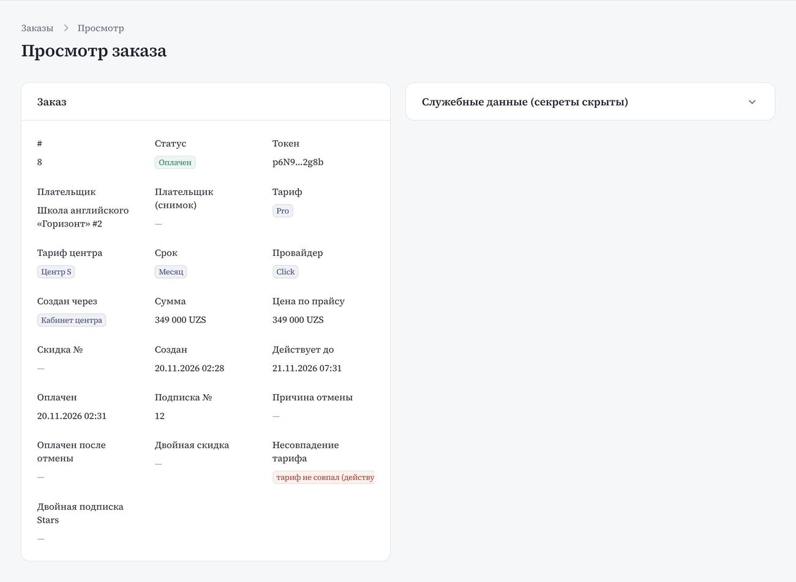
Оплаченные за последние сутки заказы с красными отметками попадают в «Требуют внимания» строкой «Заказы с расхождениями».
Раздел для разбора оплат Payme и Click: провайдер, ID транзакции у провайдера, номер заказа, состояние, сумма, когда проведена или отменена. Фильтры — провайдер и состояние, поиск — по ID транзакции.
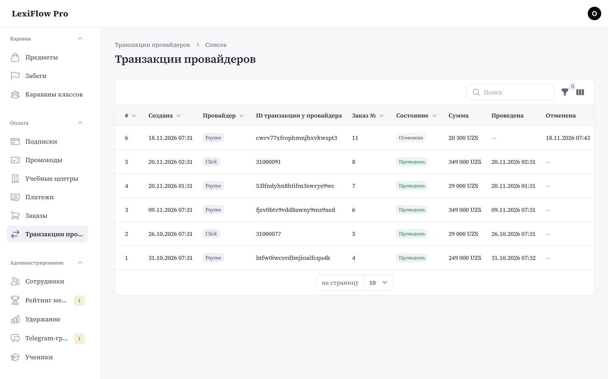
| Состояние | Что значит |
|---|---|
| Создана | провайдер начал оплату, деньги ещё не списаны |
| Проведена | оплата прошла |
| Отменена | оплата не состоялась (например, покупатель закрыл страницу или вышло время) |
| Отменена после проведения | возврат после оплаты (у Payme — обычно возврат из кабинета) |
На странице транзакции — причина отмены, «Журнал вебхуков» (все обращения провайдера по этой транзакции) и «Последний запрос провайдера (секреты скрыты)».
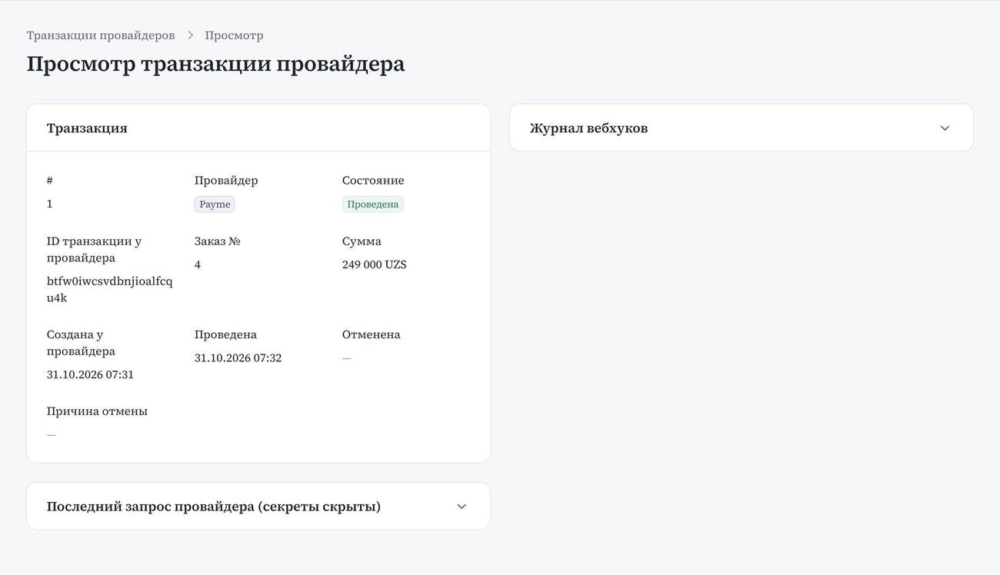